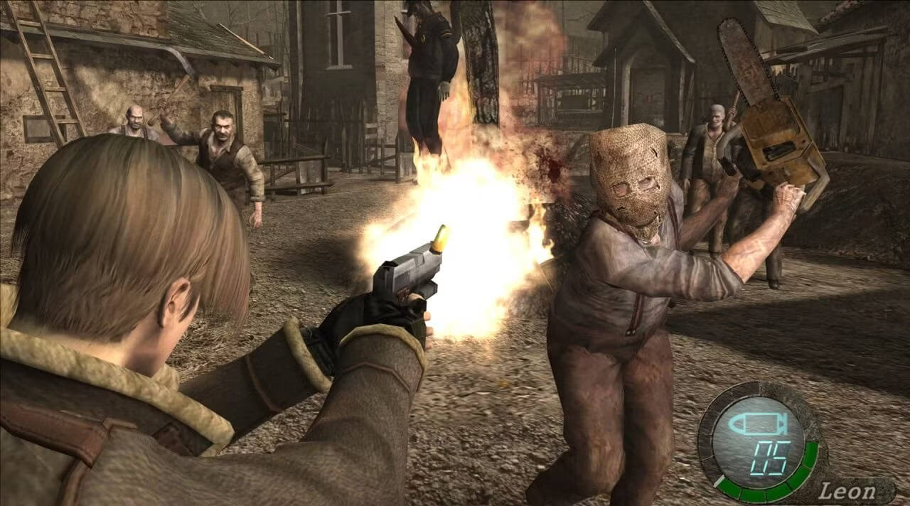
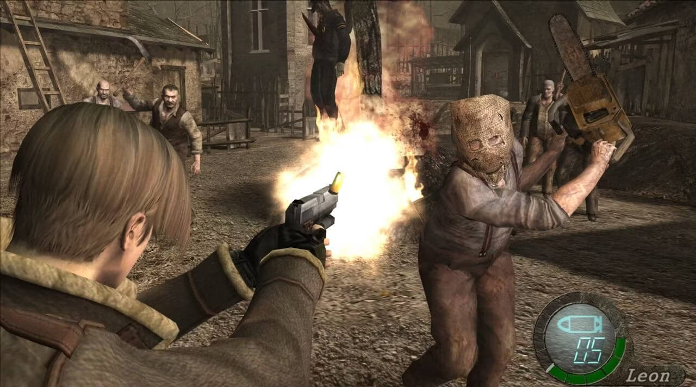

2000
Perfect Dark ⭐
★ ★ ★ ★ ★ 97%
Released On: : May 22, 2000
Summary:
Agent Joanna Dark hit the ground running in Perfect Dark, an epic tale of galactic
conspiracies in 2023 America. Now this classic shooter comes to Xbox LIVE Arcade,
rendered in greater definition and detail and sporting a silkier framerate than ever
before. Fire up your Farsight and prepare for assignment—the Dark returns this winter.
CLassic action: Play the original full game beautifully restored and back in full HD,
1080p at 60 frames per second! All the original game features are included plus new
Xbox LIVE ones.
"Rare's intelligent 3D shooter features amazing graphics, loads of in-game options, a cooperative mode, a counter-operative mode, extensive bot setups, and a the most well-rounded multiplayer mode ever to grace Nintendo 64."
- IGN, "It's still by far the finest crafted game of its ilk on the N64 and it positively oozes class from every pore."
- Games Radar,
The Legend of Zelda: Majora's Mask
★ ★ ★ ★ ★ 95%
Released On: : Oct 25, 2000
Summary:
Thrown into a parallel world by the mischievous actions of a possessed Skull Kid,
Link finds a land in grave danger. The dark power of a relic called Majora's Mask
has wreaked havoc on the citizens of Termina, but their most urgent problem is a
suicidal moon crashing toward the world. Link has only 72 hours to find a way to
stop its descent.
"Recommended above all other titles this year as the Nintendo 64 game to own."
- IGN, "Constantly surprising, always delightful, never less than utterly stunning, this journey through the looking glass into a new and perfectly formed world is escapism of the very highest order."
- Games Radar,
The Sims 🩷
★ ★ ★ ★ ⯪ 92%
Released On: : Feb 4, 2000
Summary:
In "SimCity," you had the power to build and control cities ...
with The Sims, you'll create and control people!
"The game isn't just addictive, it's downright dangerous."
- IGN, "What saves "The Sims" from becoming an unmanageable and nightmarish mess is the incredibly intuitive and easy to use interface."
- Games Radar,
2001
Tony Hawk's Pro Skater 3 ⭐
★ ★ ★ ★ ★ 97%
Released On: : Oct 30, 2001
Summary:
Challenge up to four friends in online competitions over a LAN or the Internet.
Take them on in both Trick Attack and Graffiti modes.
"Should go down in history as one of the best twitch-fests on PS2. Yes, TH3 is that good. The perfect skating game remains just a tiny hair's breadth out of reach, but if you are not satisfied with your purchase of this game, head examinations are recommended."
- IGN, "The introduction of the revert is a handy addition to you stunt arsenal, but it doesn't have the same game-changing effect that the manual had in number two. Which is good, as it adds an extra touch but doesn't meddle with a beautifully balanced control system."
- Games Radar,
Grand Theft Auto III
★ ★ ★ ★ ★ 97%
Released On: : Oct 22, 2001
Summary:
Players are put at the heart of their very own gangster movie, and let loose in a
fully-realised 3 dimensional city with a cast of hundreds, 50 plus vehicles, ranging
from sports cars to ice cream trucks and from boats to buses, 3 hours of music,
including opera, reggae, house, drum and bass, pop and disco, and a huge array of
street ready weapons.
"A massive scale operation that just gets better and better as players dig into it, even though its gets ridiculously difficult at points."
- IGN, "Almost immediately after your first play you'll realise that underneath the cloak of controversy that will forever shadow GTA3 sits a truly special, groundbreaking and brilliant game. You'll love it."
- Games Radar,
Super Smash Bros. Melee
★ ★ ★ ★ ⯪ 92%
Released On: : Dec 3, 2001
Summary:
Nintendo's all-star cast of combatants is back in Super Smash Bros. Melee, along with
a new batch of brawlers ready to tear it up. The sequel to Super Smash Bros. keeps the
same basic premise: Characters duke it out in interactive environments, using special
attacks and various items to knock each other into the abyss. Some new defensive
techniques add an even deeper level of complexity to the combat. In addition to
traditional battle royale matches, players can select all-new ways to play like Coin
mode and Tournament mode.
"SSB Melee puts the original to shame with its countless options and longevity. This has become and will likely become one of my favorite GameCube titles of all-time. It's that good."
- IGN, "It's a long way from the Tekkens of this world, with no complicated combos or tricky special moves to pull off, but under the surface there's a fighting game that requires almost as much skill in its own way, as any of the 'serious' martial arts sims - and is a lot more fun."
- Games Radar,
2002
Metroid Prime ⭐
★ ★ ★ ★ ★ 97%
Released On: : Nov 17, 2002
Summary:
Samus returns in a new mission to unravel the mystery behind the ruined walls scattered
across Tallon IV. In Metroid Prime, you'll play the role of this bounty hunter and view
the world through her visor, which displays information ranging from current energy
levels to ammunition. Equipped with a Power Beam and Gravity Suit, you must shoot locked
switches, solve puzzles, and eliminate enemies. It's up to you to explore the world and
recover more power-ups and weapons, which gradually open more gameplay areas.
"From the amazingly polished gameplay design to the gorgeous visuals and atmospheric soundtrack, Metroid Prime is unquestionably a must-have masterpiece and a show horse that all forthcoming adventure titles will be judged by."
- IGN, "Difficult to categorise but impossible not to love. Metroid Prime is simply a fabulous gaming experience and the best on the Cube."
- Games Radar,
Grand Theft Auto: Vice City
★ ★ ★ ★ ★ 95%
Released On: : Oct 29, 2002
Summary:
Welcome to Vice City. Welcome to the 1980s. Having just made it back onto the streets
of Liberty City after a long stretch in maximum security, Tommy Vercetti is sent to
Vice City by his old boss, Sonny Forelli. They were understandably nervous about his
re-appearance in Liberty City, so a trip down south seemed like a good idea. But all
does not go smoothly upon his arrival in the glamorous, hedonistic metropolis of Vice
City. He's set up and is left with no money and no merchandise. Sonny wants his money
back, but the biker gangs, Cuban gangsters, and corrupt politicians stand in his way.
Most of Vice City seems to want Tommy dead. His only answer is to fight back and take
over the city himself. Vice City offers vehicular pleasures to suit every taste. For
the speed enthusiast, there's high-performance cars and motorbikes. For the sportsman,
a powerboat or a golf buggy lets you enjoy the great outdoors. For those that need that
sense of freedom and escape, why not charter a helicopter and see the beauty of Vice
City from the air?
"It's enormous, packed with an immense amount of gameplay, and it's a truly unique gameplay experience...This year's most impressive title, by a log shot."
- IGN, "The gameplay, plot and soundtrack are all outstanding individually, but when blended together create an essential experience...What we're trying to say is this is simply the best videogame GamesMaster has played this century."
- Games Radar,
The Legend of Zelda: A Link to the Past / Four Swords
★ ★ ★ ★ ★ 95%
Released On: : Dec 3, 2002
Summary:
In A Link to the Past, Link answers Princess Zelda’s call for help against the dark
wizard Agahnim, who seeks to free Ganon from his prison. Armed with the Master Sword,
Link travels between the Light and Dark Worlds, rescues the seven maidens, and defeats
Ganon to restore peace to Hyrule.
Four Swords introduces multiplayer Zelda gameplay for the first time. When Zelda is
kidnapped by the wind sorcerer Vaati, Link draws the Four Sword, splitting into four
versions of himself. Up to four players must cooperate to solve puzzles, conquer
dungeons, and collect rupees before ultimately defeating Vaati and sealing him away
once more.
"Four Swords is Nintendo's way of giving gamers something completely new and different in the Zelda environment, and it's one heck of a good time in each play through."
- IGN, "A huge 30 hours-plus adventure but it never feels intimidatingly big. Whether you're a games novice or geriatric you'll be able to play it."
- Games Radar,
2003
The Legend of Zelda: The Wind Waker ⭐
★ ★ ★ ★ ★ 96%
Released On: : Mar 24, 2003
Summary:
AN EVIL WIND IS RISING... Legend has it that whenever evil has appeared, a hero named
Link has arisen to defeat it. The legend continues on the surface of a vast and
mysterious sea as Link sets sail in his most epic, awe-inspiring adventure yet. Aided
by a magical conductor's baton called the Wind Waker, he will face unimaginable monsters,
explore puzzling dungeons, and meet a cast of unforgettable characters as he searches
for his kidnapped sister. * Immerse yourself in a world unlike you've ever seen, as you
sail across a vast, unexplored ocean. * Master a magical conductor's baton known as the
Wind Waker to control the wind and much more! * Connect to a pal's Game Boy® Advance and
play cooperatively -- get hints, uncover secrets, and get help in battle! * Use new items
like the Grappling Hook and Deku Leaf to take the fight to spectacular, massive bosses.
* Take on hordes of incredibly animated enemies as you search through riddle-filled
dungeons.
"It's Zelda's unrivaled design, balanced and varied, and its polished play mechanics and control that ultimately set the game apart from just about every other competitor on the market."
- IGN, "By far the biggest fault with WW is that it has to end - see if you don't find yourself putting off the final boss for as long as possible by scouring the ocean for every last chest... An utter delight for both the mind and the senses to wallow in."
- Games Radar,
Madden NFL 2004
★ ★ ★ ★ ⯪ 94%
Released On: : Aug 12, 2003
Summary:
Key Features for 2004 include New Playmaker Control - Make pre-snap adjustments to your
receiver routes, direct receiver routes during a scramble, direct blocking down field
during a run, or read and react to the offense to deliver a crushing tackle; New Owner
Mode - Hire your own staff, set your team's ticket prices, build your own stadium, reward
key players with signing bonuses and boost player attributes in Mini-Camp drills; Most
Realistic NFL Playbooks Ever - Tons of new trick plays, multiple formation variations,
and the deepest NFL playbooks from all 32 officially licensed Coaches Club Head Coaches;
New Animations and Enhancements - New QB scramble transitions to improve throwing on the
run, stumbles, open field blocks, whirlwind defensive reaction moves, sideline wrap
tackles, and out of bound pushes.
"The game introduces the two best new features found in football games since the Franchise mode, as Owner mode would be a fun game on its own, and Playmaker control is simply the most useful new gameplay tool introduced into the mix in many a year."
- IGN, "Another sprawling, complex, but absurdly playable chapter in the Madden saga - but now online sexiness. What's not to love?"
- Games Radar,
Super Mario Advance 4: Super Mario Bros. 3
★ ★ ★ ★ ⯪ 94%
Released On: : Oct 21, 2003
Summary:
A combination of exciting platforming action, wild power-ups, and charming Mario style
has made Super Mario Bros. 3 a classic. With Super Mario Advance 4: Super Mario Bros.
3, you have your chance to partake in the special adventure anywhere you go on your
Game Boy Advance. Your mission is to rescue the Mushroom Kingdom monarchs who have been
transformed into animals by Bowser and his mischievous offspring, and in the process save
the princess kidnapped by Bowser. Traverse eight huge worlds and encounter fun minigames
and frantic boss battles as you explore the first Mario game to use an overworld map.
"Its timeless design holds up well into its 15th anniversary. But the fact that players can continue the experience with brand new level designs is phenomenal and just opens up a whole new dimension for replayability."
- IGN, "SMB3 purists may be annoyed with some of the minor tweaks that have been made to the original game, but that shouldn't stop them from experiencing this incredible platformer all over again."
- GameSpot,
2004
Half-Life 2 ⭐
★ ★ ★ ★ ★ 96%
Released On: : Nov 16, 2004
Summary:
By taking the suspense, challenge and visceral charge of the original, and adding
startling new realism and responsiveness, Half-Life 2 opens the door to a world where
the player's presence affects everything around him, from the physical environment to
the behaviors -- even the emotions -- of both friends and enemies. The player again
picks up the crowbar of research scientist Gordon Freeman, who finds himself on an
alien-infested Earth being picked to the bone, its resources depleted, its populace
dwindling. Freeman is thrust into the unenviable role of rescuing the world from the
wrong he unleashed back at Black Mesa. And a lot of people -- people he cares about --
are counting on him.
"Simply a masterpiece -- a work of art in the genre. Not only does it engage the mind with mysterious happenings, vagaries, and mostly intelligent dialogue, but also captures the senses with a superb visual style made possible by brilliant technology."
- IGN, "A game of a higher order of magnitude than any of the previous pretenders to the throne. The polish and the stratospheric production values mean that Half-Life 2 is a magnificent, dramatic experience that has few peers."
- Games Radar,
Halo 2
★ ★ ★ ★ ★ 95%
Released On: : Nov 9, 2004
Summary:
The saga continues with Halo 2 the international award-winning sequel to the highly
successful and critically acclaimed Halo: Combat Evolved. In this sequel, the battle
comes to Earth, and Master Chief, a genetically enhanced super soldier, is the only
thing standing between the relentless alien Covenant and the destruction of all
humankind. Exciting Single-Player Gameplay: Experience first hand the epic struggle
between Master Chief and the Covenant armada. Brandish dual-wield weapons Covenant arms
and pilot human and non-human vehicles and aircraft to battle intelligent AI alien
enemies. Halo 2 for Windows Vista taps into the power of Live Anywhere, a service
similar to Xbox Live, to deliver online matchmaking for PC gamers. The service enables
Windows Vista gamers all over the globe to connect via their PCs and play on an
innovative and competitive online forum. New Multiplayer Map Editor: The game also
features the all-new new Map Editor, guaranteeing additional new, fan-generated content
in the future. The Halo 2 community can now tap their endless creative potential to
develop an unlimited number of user-created multiplayer levels. Complete Community
Freedom: Halo 2 for Windows Vista offers gamers the freedom to host their own dedicated
servers for maximum multiplayer action.
"It's a noble achievement in storytelling, gameplay balance, and multiplayer design. And it's easily the best console-based, online game on Earth. Easily. Like so many people have said thus far: In 2004, Halo 2 will own you."
- IGN, "A gripping and epic single-player game that'll take you by surprise - and perhaps the finest multiplayer game ever devised. Evolutionary rather then revolutionary, perhaps, but any way you cut it this is a first-person tour-de-force."
- Games Radar,
World of Warcraft
★ ★ ★ ★ ⯪ 93%
Released On: : Nov 23, 2004
Summary:
Four years have passed since the aftermath of Warcraft III: Reign of Chaos, and a great
tension now smolders throughout the ravaged world of Azeroth. As the battle-worn races
begin to rebuild their shattered kingdoms, new threats, both ancient and ominous, arise
to plague the world once again. World of Warcraft is an online role-playing experience
set in the award-winning Warcraft universe. Players assume the roles of Warcraft heroes
as they explore, adventure, and quest across a vast world. Being "Massively Multiplayer,"
World of Warcraft allows thousands of players to interact within the same world. Whether
adventuring together or fighting against each other in epic battles, players will form
friendships, forge alliances, and compete with enemies for power and glory. A dedicated
live team will create a constant stream of new adventures to undertake, lands to explore,
and monsters to vanquish. This content ensures that the game will never be the same from
month to month, and will continue to offer new challenges and adventures for years to come.
"The MMO we've all been waiting for. It does not blow away the genre, but it does hone it to near-perfection. I think the biggest problem you'll have is managing to play it in moderation."
- IGN, "There's an unbelievable amount of variety to be discovered, from dusty deserts to lush grassland and spooky forests. The cartoon-like presentation ties everything together nicely - you'll never look at something and think it looks stupid."
- Games Radar,
2005
Resident Evil 4 ⭐
★ ★ ★ ★ ★ 96%
Released On: : Jan 11, 2005
Summary:
In Resident Evil 4 players are reacquainted with Leon S. Kennedy, Raccoon City Police
Department's idealistic rookie cop from "Resident Evil 2." It has been six years since
the destruction of Raccoon City and in that time, the U.S. government has been able to
destroy the nefarious Umbrella Corporation. Fast forward to 2004 and players rejoin
Leon, who is now a U.S. agent with a top-secret mission. He has been tasked to look
into the abduction of the President's daughter and his investigation has led him to a
mysterious location in Europe. As Leon encounters unimaginable horrors, he must find
out who or what is behind everything.
 

"This is simply the best survival horror game ever created. In fact, had it come out in 2004, it would have been my pick for Game of the Year...You don't own Resident Evil 4. It owns you. An absolute must-have."
- IGN, "A phenomenally high standard for survival horror, Resident Evil 4 is an intensely satisfying game of quite astounding quality. [NGC]"
- Games Radar,
God of War
★ ★ ★ ★ ⯪ 94%
Released On: : Mar 22, 2005
Summary:
Unleash the power of the Gods and embark on a merciless quest as Kratos, an ex-Spartan
warrior driven to destroy Ares, the God of War. Armed with lethal double chainblades,
Kratos must carve through mythology's darkest creatures including Medusa, Cyclops, the
Hydra and more, while solving intricate puzzles in breathtaking environments. Driven by
pure revenge, nothing can stop Kratos from achieving absolution.
"If you like to kill freaky things with your giant serrated knives, you'll love the s*** out of this... This videogame features sexual situations, bare breasts and excessive brutality. Good with that? Excellent!"
- IGN, "One of the best action titles on the PS2, God of War stands out as an ultraviolent masterpiece."
- Games Radar,
Guitar Hero
★ ★ ★ ★ ⯪ 91%
Released On: : Nov 7, 2005
Summary:
Strap on your Guitar Hero SG controller, plug-in, and CRANK IT UP. Guitar Hero creates
all the sensations of being a rock star, as you rock out to 30 of the greatest rock
anthems of all time and more. Soundtrack includes songs as made famous by such
legendary artists as the Red Hot Chili Peppers, David Bowie, Boston, Sum 41, Ozzy
Osbourne, Audioslave, White Zombie, Franz Ferdinand, and The Ramones. So kiss that air
guitar goodbye and get ready to rock. Features over 30 of the greatest rock songs of
all-time. 4 difficulty levels (Easy, Medium, Hard, and Expert). 6 venues that range
from basement parties to sold out stadiums. 8 different characters that each offer
their own look and unique style of playing, from metal head to classic rocker. Two-
player mode that offers tons of multiplayer fun.
"Guitar Hero is pure bliss, on a stick even. It's got a fantastic soundtrack that's blended incredibly well into the game, a great peripheral in the SG guitar controller and well, that's really what it's all about. The game is just fun. Pure, unadulterated fun."
- IGN, "With its extremely smart approach to difficulty, its great guitar controller, and its killer song selection, Guitar Hero might just be the best rhythm game ever made."
- GameSpot,
2006
The Legend of Zelda: Twilight Princess ⭐
★ ★ ★ ★ ★ 95%
Released On: : Nov 19, 2006
Summary:
When an evil darkness enshrouds the land of Hyrule, a young farm boy named Link must
awaken the hero - and the animal - within. When Link travels to the Twilight Realm,
he transforms into a wolf and must scour the land with the help of a mysterious girl
named Midna. Using the power and unique control of the Wii console, The Legend of
Zelda: Twilight Princess features precise aiming control using the Wii Remote. The
Wii Remote and the Nunchuk controller are used for a variety of game activities,
including fishing and special sword attacks. Players ride into battle against troops
of foul creatures using an amazing horseback combat system, then take on massive
bosses that must be seen to be believed.
"The greatest Zelda game ever created and one of the best launch titles in the history of launch titles – second only, perhaps, to the at-the-time ground- breaking "Super Mario 64." It is also one of the finest games I have ever played."
- IGN, "One of the most stirring, rewarding gaming experiences in history."
- Games Radar,
Gears of War
★ ★ ★ ★ ⯪ 94%
Released On: : Nov 7, 2006
Summary:
Gears of War blends tactical action with survival horror and thrusts gamers into a
deep and harrowing story of humankind's epic battle for survival against the Locust
Horde, a nightmarish race of creatures that surface from the bowels of the planet.
Lead war hero Marcus Fenix and his fire team as they face the onslaught of merciless
warrior fiends. A revolutionary tactical combat system and breathtaking, high-
definition visuals from the Unreal Engine 3 immerse you in a horrifying story of war
and survival. A.I. teammates are indiscernable from human players. Voice recognition
and real-time lip synching heighten the experience. The battlefield is a lethal place.
To survive, suppress your enemy with blindfire, take cover in interactive
environments, or use weapons and teammates to outwit your foes.
"There is a healthy learning curve to the cover system, but those who master it will find Epic's twisting and turning and rolling an exciting change-up in the shooter genre, a blend of fast-arcade action and basic, tactical maneuvering. The Insane difficulty level gives Gears legs months after you've finished the relatively-short campaign, and even with a friend it is an impossible, irresistible challenge."
- IGN, "Huge, muscular combatants move like giant men wearing heavy gear, fine details are everywhere, and splattering blood never looked so beautiful - and we mean that in an uncreepy, non-Hannibal Lecter kind of way. It just looks incredible."
- Games Radar,
The Elder Scrolls IV: Oblivion
★ ★ ★ ★ ⯪ 94%
Released On: : Mar 20, 2006
Summary:
Oblivion is a single-player game that takes place in Tamriel's capital province,
Cyrodiil. You are given the task of finding the hidden heir to a throne that sits
empty, the previous emperor having been killed by an unknown assassin. With no true
Emperor, the gates to Oblivion (the equivalent of hell in the world of Tamriel) open,
and demons begin to invade Cyrodiil and attack its people and towns. It's up to you
to find the lost heir to the throne and unravel the sinister plot that threatens to
destroy all of Tamriel. In keeping with the Elder Scrolls tradition, players have the
option to experience the main quest at their own pace, and there are plenty of
opportunities to explore the vast world and make your own way. Numerous factions can
be joined, such as the thieves or mages guilds, and each contains its own complete
storyline and the chance to rise to the head of the faction and reap further rewards.
Oblivion features a groundbreaking new AI system, called Radiant AI, which gives non-
player characters (NPCs) the ability to make their own choices based on the world
around them. They decide where to eat or who to talk to and what they say. They sleep,
go to church, and even steal items, all based on their individual characteristics.
Full facial animations and lip-synching, combined with full speech for all dialog,
allows NPCs to come to life like never before.
"Like Homer, once you've begun to consume what this eternity has to offer, you'll have no desire to stop. The fourth Elder Scrolls entry is utterly brilliant and should not be missed by any adventure-spirited gamer."
- Games Radar, ""Morrowind" earned recognition for being one of the best role-playing games in years, but the immersive and long-lasting experience it provided wasn't for everyone. Oblivion is hands-down better, so much so that even those who'd normally have no interest in a role-playing game should find it hard to resist getting swept up in this big, beautiful, meticulously crafted world."
- GameSpot,
2007
Super Mario Galaxy ⭐
★ ★ ★ ★ ★ 97%
Released On: : Nov 12, 2007
Summary:
The ultimate Nintendo hero is taking the ultimate step ... out into space. Join Mario
as he ushers in a new era of video games, defying gravity across all the planets in
the galaxy. When some creature escapes into space with Princess Peach, Mario gives
chase, exploring bizarre planets all across the galaxy. Mario, Peach and enemies new
and old are here. Players run, jump and battle enemies as they explore all the planets
in the galaxy. Since this game makes full use of all the features of the Wii Remote,
players have to do all kinds of things to succeed: pressing buttons, swinging the Wii
Remote and the Nunchuk, and even pointing at and dragging things with the pointer.
Since he's in space, Mario can perform mind-bending jumps unlike anything he's done
before. He'll also have a wealth of new moves that are all based around tilting,
pointing and shaking the Wii Remote. Shake, tilt and point! Mario takes advantage of
all the unique aspects of the Wii Remote and Nunchuk controller, unleashing new moves
as players shake the controller and even point at and drag items with the pointer.
"One of the greatest platformers I have ever played, Wii's best game, and an absolute must-own experience. And to me, this odd trek through space really does feel like the true sequel to "Mario 64.""
- IGN, "Where Galaxy matches "Mario 64" is not quite in its quality of execution - alongside the brilliance of some stars are others which fall a bit flat, and there isn't the overall sense of implacable perfection that that game had - but in its confidence and originality."
- Eurogamer,
BioShock
★ ★ ★ ★ ★ 96%
Released On: : Aug 21, 2007
Summary:
Going beyond "run and gun corridors," "monster-closet AIs" and static worlds, BioShock
creates a living, unique and unpredictable FPS experience. After your plane crashes
into icy uncharted waters, you discover a rusted bathysphere and descend into Rapture,
a city hidden beneath the sea. Constructed as an idealistic society for a hand picked
group of scientists, artists and industrialists, the idealism is no more. Now the city
is littered with corpses, wildly powerful guardians roam the corridors as little girls
loot the dead, and genetically mutated citizens ambush you at every turn. Take control
of your world by hacking mechanical devices, commandeering security turrets and crafting
unique items critical to your very survival. Upgrade your weapons with ionic gels,
explosives and toxins to customize them to the enemy and environment. Genetically modify
your body through dozens of Plasmid Stations scattered throughout the city, empowering
you with fantastic and often grotesque abilities. Explore a living world powered by
Ecological A.I., where the inhabitants have interesting and consequential relationships
with one another that impact your gameplay experience. Experience truly next generation
graphics that vividly illustrate the forlorn art deco city, highlighted by the most
detailed and realistic water effects ever developed in a video game. Make meaningful
choices and mature decisions, ultimately culminating in the grand question: do you exploit
the innocent survivors of Rapture...or save them?
"There is art here, despite what many would say isn't possible with games, from Roger Ebert to game designers like Hideo Kojima...BioShock stands as a monolithic example of the convergence of entertaining gameplay and an irresistibly sinister, engrossing storyline that encompasses a host of multifaceted characters. This is an essential gaming experience."
- IGN, "Really, though, the only glaring weakness we can find in BioShock is that it may be too unusual, too original, too artistic and too genius to be embraced by the general public. Please don't let this game become that forgotten, one-of-a-kind masterpiece."
- Games Radar,
Call of Duty 4: Modern Warfare
★ ★ ★ ★ ⯪ 94%
Released On: : Nov 5, 2007
Summary:
As Call of Duty 4: Modern Warfare's single player campaign unfolds, the player is introduced
to new gameplay at every turn – one moment you are fast-roping from your Black Hawk helicopter
after storming into the war zone with an armada of choppers, the next you are a sniper, under
concealment, in a Ghillie suit miles behind enemy lines, the next you are engaging hostiles
from an AC-130 gunship thousands of feet above the battlefield. Mixed with explosive action,
Call of Duty 4: Modern Warfare also delivers special effects, including use of depth of field,
rim-lighting, character self-shadowing, real time post-processing, texture streaming as well
as physics-enabled effects. Infinity Ward deployed a dedicated team from the start to deliver
a new level of depth to multiplayer. Building on the hit "Call of Duty 2" online experience,
Call of Duty 4: Modern Warfare's new multiplayer provides the community an addictive and
accessible experience to gamers of all levels.
"Though the single-player lacks length, the multiplayer should keep you invested in COD4 for the long winter. This is a truly fantastic multiplayer offering that's as deep as any other online game available."
- IGN, "The single-player campaign is over in a flash, but the high quality of that campaign and its terrific multiplayer options make Call of Duty 4 a fantastic package."
- GameSpot,
2008
Grand Theft Auto IV ⭐
★ ★ ★ ★ ★ 98%
Released On: : Apr 29, 2008
Summary:
What does the American Dream mean today? For Niko Belic, fresh off the boat from Europe.
It's the hope he can escape his past. For his cousin, Roman, it is the vision that together
they can find fortune in Liberty City, gateway to the land of opportunity. As they slip
into debt and are dragged into a criminal underworld by a series of shysters, thieves and
sociopaths, they discover that the reality is very different from the dream in a city that
worships money and status, and is heaven for those who have them an a living nightmare for
those who don't.
"Rare's intelligent 3D shooter features amazing graphics, loads of in-game options, a cooperative mode, a counter-operative mode, extensive bot setups, and a the most "I could go on and on about why Grand Theft Auto IV is one of the best games we've ever seen and why even folks who are easily offended should play it, but that would be pointless. The only thing you need to know is that you have to play this game. Period."
- IGN, "A game that you simply have to play. The single-player game, which you can still play long after you complete the story, is the series' best by far, and the multiplayer features are good enough that you'll likely have no problem finding people to play with for many months to come."
- GameSpot,
LittleBigPlanet
★ ★ ★ ★ ★ 95%
Released On: : Oct 27, 2008
Summary:
In LittleBigPlanet Players meet on a blue and green planet scattered with individual plots
– and use their character's amazing abilities to play, create and share what they build with
other gamers throughout the world via the Playstation Network. The LittleBigPlanet
experience starts with players learning about their character’s powers to interact
physically with the environment. There are places to explore, creative resources to
collect and puzzles to solve – all requiring a combination of brains and collaborative
teamwork. As soon as players begin their creative skills will grow and they will soon be
ready to start creating and modifying their surroundings – the first step to sharing them
with the whole community.Characters have the power to move anything in this glued and
stitched-together 3D landscape; they have the power to design, shape and build both objects
and entire locations for others to view and play. There’s no complicated level editor;
all of these skills can be learned by simply playing the game. Creativity is part of the
gameplay experience and playing is part of the creative experience. Players can make their
world as open or as secretive to explore as they like. When it’s ready, they can invite
anyone within the LittleBigPlanet community to come and explore their patch – or can go
and explore everybody else's.
"Media Molecule has created a brilliant platformer, and then given you the tools to recreate the whole thing over again, or better yet, to create your own ideas from scratch. It's not perfect - the controls could be tighter, automatically shifting between planes can be problematic, the editor isn't quite as robust as you might hope - but what's there is nothing short of astounding."
- IGN, "Little Big Planet is a novel, imaginative, and highly customisable platform game."
- GameSpot,
Super Smash Bros. Brawl
★ ★ ★ ★ ⯪ 93%
Released On: : Mar 9, 2008
Summary:
Super Smash Bros. Brawl is the next installment in the Smash Bros. series for the
company's Wii console. Among the new characters playable in the game are Meta Knight,
the sword-wielding nemesis of Kirby; Pit, the angelic archer from Kid Icarus; Zero Suit
Samus, the powerful Metroid series heroine minus her versatile armor; and Wario, who
demonstrates a noxious attack of gastronomic proportions. Also Snake, the gritty soldier
from Konami's hugely popular Metal Gear series.
"The title's robust and balanced multiplayer offerings are completely engrossing and wholly entertaining from beginning to end, and this time around you can take those bouts to the online arena for similarly satisfying results."
- IGN, "From the digital-crack gameplay to the ocean-deep customization to the enjoyable Subspace Emissary, it's completely jam-packed with Nintendo love. The sights, the sounds, everything is an unfiltered pat on the back and incessant in-joke for longtime fans. For everyone else, it's a dependably solid fighter that destroys its predecessor in every way."
- Game Radar,
2009
Uncharted 2: Among Thieves ⭐
★ ★ ★ ★ ★ 96%
Released On: : Oct 13, 2009
Summary:
Fortune hunter Nathan Drake returns in Uncharted 2: Among Thieves, a third-person action-
adventure/shooter created by award-winning developer Naughty Dog. Down on his luck, Drake
is lured back into the treacherous world of thieves and mercenary treasure-seekers he had
sought to leave behind. When a mysterious artifact propels Drake on an expedition to find
the legendary Himalayan valley of Shambhala, he finds himself embroiled in a dangerous
game of cat-and-mouse against a fugitive war criminal who’s after more than just the fabled
riches of the lost city. Caught in a web of deception and plunged into an increasingly
deadly pursuit that tests the limits of his endurance, Drake will be forced to risk
everything - but has his luck finally run out?
"It's very, very good. It's easily one of the best games on the system, blending fantastic presentation and visuals with gameplay that is practically second to none. And then there's the stellar multiplayer which you'll probably be playing until Uncharted 3 ships. No, Uncharted 2 is not perfect, but it's closer than pretty much any other game out there these days."
- IGN, "Brilliant, brilliant, brilliant. It looks amazing, plays like a dream and the voice-acting /story-telling will hook you in right from the off. PS3 officially has it's a killer-app and a million tears are shed by 360 fanboys."
- Games Radar,
Street Fighter IV
★ ★ ★ ★ ⯪ 93%
Released On: : Feb 17, 2009
Summary:
Street Fighter IV features a mix of returning favourites such as Ryu, Ken, Chun-Li and Guile
along with new characters created exclusively for this game such as Crimson Viper, Abel, El
Fuerte, and Rufus. Characters and environments are rendered in high definition 3D, while the
game is played in the classic Street Fighter 2D perspective with additional 3D camera
flourishes. Six-button controls for the game return, with a host of new special moves and
features integrated into the input system. Street Fighter IV also incorporates state of the
art online match making and worldwide online gameplay. Mixing classic genre-defining game
mechanics the franchise is known and loved for with all-new, never-before-seen gameplay
systems, Street Fighter IV brings a brand new fighting game to fans the world over. With the
inclusion of Capcom's latest advancements in new generation technology, Street Fighter IV
promises to deliver an extraordinary experience that will re-introduce the world to the time-
honoured art of virtual martial arts. New special moves that go beyond any Street Fighter
fan's wildest imagination, including Focus attacks, Super Combos, and the revenged-fueled
Ultra Combo system. Classic Street Fighter characters recreated for a new generation of
gamers, including the original cast of Street Fighter II. New brawlers: female super-spy
Crimson Viper, lucha libre wrestler El Fuerte, mixed martial artist Abel and more. New
gameplay elements provide new challenges for both newcomers and the most seasoned Street
Fighter pro. Online gameplay features, including instantaneous online challenges, versus
mode, tournament mode, and world wide online gameplay.
"Street Fighter IV is a fantastic game overall and Capcom should be commended for designing a game that can work on so many levels by appealing to both casual and hardcore players."
- IGN, "It will be like playing "SFII" for the first time all over again, only with the years of love and experience you've since gained already built in. To long-term Street Fighter fans, everything old is new again. To the new players, we simply say welcome to the party. You're going to have a hell of a good time."
- Games Radar,
Batman: Arkham Asylum
★ ★ ★ ★ ⯪ 92%
Released On: : Aug 25, 2009
Summary:
In Batman: Arkham Asylum, the player assumes the role of Batman as he delivers The Joker
to Arkham Asylum. There, the imprisoned super-villains have set a trap and an immersive
combat gaming experience unfolds. With an original script penned by Emmy Award-winning
Batman writer Paul Dini, the game brings the universe of DC Comics' detective to life with
stunning graphics. Batman: Arkham Asylum offers players the chance to battle Gotham's worst
villains with Batman's physical and psychological strength in a graphically distinct and
story-driven game.
"The greatest comic book videogame of all time. This is an adult Dark Knight story that is well-told, packs some truly fun gameplay elements, has topnotch voice talent, and feel like it's part of Batman cannon."
- IGN, "Not only a brilliantly authentic presentation of its subject matter but a tremendous game in its own right, Batman: Arkham Asylum is a big, clever and finely crafted experience which propels Rocksteady immediately into the realm of triple-A developers. This year's BioShock. That's what it is."
- Games Radar,
2010
Super Mario Galaxy 2 ⭐
★ ★ ★ ★ ★ 97%
Released On: : May 23, 2010
Summary:
Super Mario Galaxy 2, the sequel to the galaxy-hopping original game, includes the gravity-
defying, physics-based exploration from the first game, but is loaded with entirely new
galaxies and features to challenge players. On some stages, Mario can pair up with his
dinosaur buddy Yoshi and use his tongue to grab items and spit them back at enemies. Players
can also have fun with new items such as a drill that lets our hero tunnel through solid rock.
"Consider me "wowed." Again. Yes, Super Mario Galaxy 2 is more of what made the original so amazingly good: brilliant gravity platfoming. Incredibly tight and responsive controls. Fantastic musical score. But it's not a "me too" experience -- a significant majority of this sequel is brand new."
- IGN, "Expanding on the original's brilliance, this ingenious platformer only gets better by embracing the Wii's limited capabilities and adds so many ideas, big and small, that we can't help but love it. Even if you (mistakenly) believe it's too similar to the first game, what's wrong with more of an incredibly great thing?"
- Games Radar,
Red Dead Redemption
★ ★ ★ ★ ★ 95%
Released On: : May 18, 2010
Summary:
Developed by Rockstar San Diego, as a follow up to the 2004 hit game Red Dead Revolver, Red
Dead Redemption is a Western epic, set at the turn of the 20th century when the lawless and
chaotic badlands began to give way to the expanding reach of government and the spread of the
Industrial Age. The story of former outlaw, John Marston, Red Dead Redemption takes players
on a great adventure across the American frontier. Utilizing Rockstar's proprietary Rockstar
Advanced Game Engine (RAGE), Red Dead Redemption features an open-world environment for
players to explore, including frontier towns, rolling prairies teeming with wildlife, and
perilous mountain passes - each packed with an endless flow of varied distractions. Along
the way, players experience the heat of gunfights and battles, meet a host of unique
characters, struggle against the harshness of one of the world’s last remaining wildernesses,
and ultimately pick their own precarious path through an epic story about the death of the
Wild West and the gunslingers that inhabited it.
"Rockstar has taken the Western to new heights and created one of the deepest, most fun, and most gorgeous games around. You can expect the occasional bug or visual hiccup, but you can also expect a fantastic game that offers the Western experience we've all been waiting for."
- IGN, "Without a doubt, Red Dead Redemption has been worth the wait. The finesse of the final delivery and the richness of the world is awe-inspiring and will keep you thrilled from start to finish."
- Games Radar,
Halo: Reach 🩷
★ ★ ★ ★ ⯪ 91%
Released On: : Sep 14, 2010
Summary:
From the beginning, you know the end. In Halo: Reach, players experience the fateful moments
that forged the Halo legend. It's the story of Noble Team, a squad of heroic Spartan soldiers,
and their final stand on the planet Reach, humanity's last line of defense between the
terrifying Covenant and Earth. This darker story is echoed by grittier visuals amid a backdrop
of massive, awe-inspiring environments. Characters, enemies and environments are rendered in
amazing detail by an all-new engine designed to deliver epic-scale encounters against the
cunning and ruthless Covenant.
"Even if you've grown tired of the Halo formula through the years, I'd still recommend this game to you. It's just that good."
- IGN, "Do you buy Halo mostly for the multiplayer? Then Reach is everything you'd want and expect from Bungie's final contribution to the franchise – perfectly polished familiarity with exactly the right amount of fresh features and bold risk-taking. If you're counting on an epic, sweeping and satisfying campaign story, however, you might want to keep waiting for Halo 4."
- Games Radar,
2011
The Elder Scrolls V: Skyrim ⭐
★ ★ ★ ★ ★ 96%
Released On: : Nov 11, 2011
Summary:
The next chapter in the Elder Scrolls saga arrives from the Bethesda Game Studios. Skyrim
reimagines the open-world fantasy epic, bringing to life a complete virtual world open for you
to explore any way you choose. Play any type of character you can imagine, and do whatever you
want; the legendary freedom of choice, storytelling, and adventure of The Elder Scrolls is
realized like never before. Skyrim's new game engine brings to life a complete virtual world
with rolling clouds, rugged mountains, bustling cities, lush fields, and ancient dungeons.
Choose from hundreds of weapons, spells, and abilities. The new character system allows you to
play any way you want and define yourself through your actions. Battle ancient dragons like
you've never seen. As Dragonborn, learn their secrets and harness their power for yourself.
"Featuring the same kind of thrilling freedom of choice The Elder Scrolls series is known for along with beautiful visuals and a stirring soundtrack, playing Skyrim is a rare kind of intensely personal, deeply rewarding experience, and one of the best role-playing games yet produced."
- IGN, "Skyrim is sprawling, generous, gorgeous and ambitious. It does what few games can: thoroughly follow through on its ambitions. It could be possible to play only this game for the next year and still not discover all of its mysteries."
- Games Radar,
Portal 2
★ ★ ★ ★ ★ 95%
Released On: : Apr 19, 2011
Summary:
Like the original Portal (2007), players solve puzzles by placing portals and teleporting
between them. Portal 2 adds features including tractor beams, lasers, light bridges, and
paint-like gels that alter player movement or allow portals to be placed on any surface.
"Makes the original look like the prototype it was. It's filled with a larger cast of characters vividly brought to life through brilliant writing and some of the best voice acting in video games...From the beginning of the single-player story to the end of the co-op mode, Portal 2 is a novel, unforgettable experience."
- IGN, "Portal 2 couldn't be Portal, but it's the next best thing. It's a longer, funnier, more emotional plummet through Aperture's perplexing laboratory, and its meticulous detail, perfect pacing, and kinetic, mind-expanding puzzles make it a blazingly memorable experience. It's so damn memorable, already feel nostalgic about it."
- Games Radar,
Minecraft 🩷💙
★ ★ ★ ★ ⯪ 93%
Released On: : Nov 18, 2011
Summary:
The game involves players creating and destroying various types of blocks in a three
dimensional environment. The player takes an avatar that can destroy or create blocks, forming
fantastic structures, creations and artwork across the various multiplayer servers in multiple
game modes.
"Minecraft, more than any other game I know, isn't about playing it a specific way; it's an open-world, a blank page just daring you to jump in and do with it what you will."
- IGN, "Now that it's finally "finished," Minecraft stands as a remarkable achievement - not only a well-rounded gaming experience, but a chance for players to experiment, explore freely and reshape their environment to an almost ludicrous level. If you own a computer and haven't given Minecraft a try, you're missing one of the most unique experiences of this generation."
- Games Radar,
2012
Persona 4 Golden ⭐
★ ★ ★ ★ ⯪ 93%
Released On: : Nov 20, 2012
Summary:
Persona 4: The Golden is a remastered version of PS2 classic Shin Megami Tensei: Persona
4.
Shortly after an urban youth begins a year-long stay in the countryside town of Inaba, the
rural town's peace is shattered by a horrific murder that leaves no clues or suspects.
As the lone incident develops into a series of bizarre crimes, he discovers that only he
and his friends have the power to solve the baffling case, bring those responsible to justice,
and restore harmony to his new home. The game focuses on story and character development.
"While the game doesn't do much of note besides bringing the 2008 title to the HD era, it doesn't need to. The story hooks you, dungeon crawling makes for a great time, and exploring your relationships while building a better army is the kind of tinkering you can get lose hours to."
- IGN, "Persona 4 Golden sports a phenomenal amount of content packed into a single card. One of the PlayStation 2's greatest role-playing games of all time graces the Vita with slick, vivid aesthetic improvements, loads of additional areas to explore, and tons of reasons to come back even if you've beaten the game into the ground."
- Games Radar,
Mass Effect 3
★ ★ ★ ★ ⯪ 93%
Released On: : Mar 6, 2012
Summary:
BioWare completes the Mass Effect Trilogy with Mass Effect 3. Earth is burning. Striking from
beyond known space, a race of terrifying machines have begun their destruction of the human
race. As Commander Shepard, an Alliance Marine, the only hope for saving mankind is to rally
the civilizations of the galaxy and launch one final mission to take back the Earth.
"In many ways, Mass Effect 3 has set the bar even higher as the worthy conclusion to one of the finest stories ever told in gaming history, even if it's still admittedly imperfect."
- IGN, "Even if the end destination of this final chapter isn't quite as magnificent as we hoped for, we'll never regret the hundred-hour, three-game journey we took across the galaxy to get there. Mass Effect 3 is an incredible experience that rewards you for those years of investment and devotion to its stratospheric tale."
- Games Radar,
FIFA Soccer 13
★ ★ ★ ★ ⯪ 90%
Released On: : Sep 25, 2012
Summary:
FIFA 13 is the next iteration in the football[soccer] franchise - in handheld form.
The FIFA video game series, published by Electronic Arts (EA) from 1993 until 2022, simulated
association football, offering players a realistic football experience with real leagues, clubs,
and players.
"Kinect works well. It's been implemented unobtrusively and in a way that makes sense."
- IGN, "There are some annoyances--the physics engine feels like it's been overly tinkered, and the shortcomings of career mode's become apparent when you step out of Europe's top leagues. However, it succeeds at one key task that it sets out to do: render FIFA 12 obsolete. You can wear last year's jersey, but you won't want to play last year's game any longer."
- Games Radar,